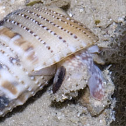
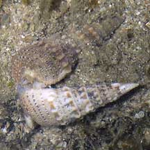

|
|
| shelled snails text index | photo index |
| Phylum Mollusca > Class Gastropoda > Family Cerithiidae |
| Obelisk
creeper snail Rhinoclavis sinensis* Family Cerithiidae updated Jul 2020 Where seen? This large creeper snail with an elegant shell is commonly seen on our Southern shores. Often seen burrowing in sandy areas near reefs, or found among seaweeds on coral rubble near reefs. Usually alone, or a few individuals. So far not seen in gatherings of large numbers like other common Creeper snails. Elsewhere, they are seen on reef flats, sandy and coral rubble bottoms and lagoons. Features: 3-7cm long. Shell conical with a pattern of white spiralling large notched bumps with fine ridges of dashed dots in between. Shell opening large with flared lip and upturned spout at tip. Operculum made out of a horn-like material, whorls not easily seen. Animal with mottled body. They are preyed upon by other snails such as Drills as well as by crabs. Human uses: Where they are abundant, they may be collected for food and for their shell. |
 Sentosa, Oct 08 |
 |
 |
|
 St. John's Island, Sep 07 |
 Mating? Sisters Island, May 07 |
*Species are difficult to positively identify without close examination.
On this website, they are grouped by external features for convenience of display.
| Obelisk creeper snails on Singapore shores |
On wildsingapore
flickr
|
| Other sightings on Singapore shores |
Links
References
|